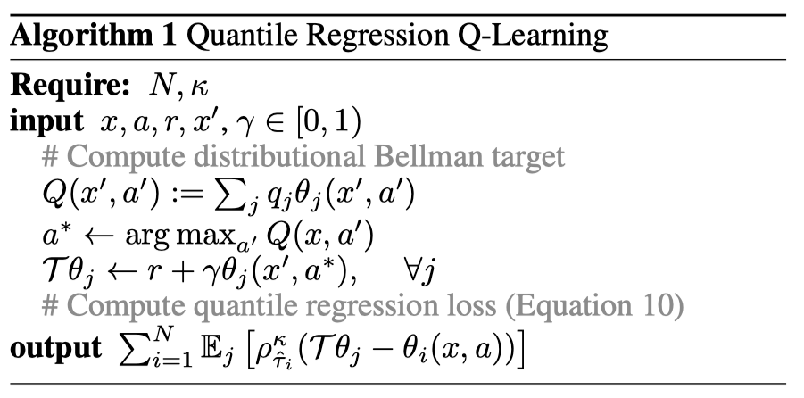

|
As always, please read the code first. Comments in the code should tell you when you might want to refer to implementation notes. For this reason, implementation notes are not comprehensive; instead, they focus on convoluted details. Anyway, cheers and happy reinforcement learning!
In this document, I focus on implementing the last output step of the QR-DQN algorithm using broadcasting. It is difficult to implement because the algorithm uses a single transition at each time-step, yet in practice we need to deal with transitions in batches.
Everything here is motivated by this script but strives for more clarity in notation.
|  |
In practice, \(T \theta_j\)'s will be put together into a tensor of shape (batch_size, num_quants), and \(\theta_i (x, a)\)'s will also have the same size.
To compute the output, we need to realize that
which simply means that we need calculate the subtraction between all \((T \theta_j, \theta_i (x, a))\) pairs.
Note that \(\ast\) means “in practice”. Since we don't want the loss to grow linearly just because we have more quantiles, we multiply the loss by \(\frac{1}{N}\); otherwise we need to use different learning rates for different number of quantiles, which is clearly undesirable.
To do this subtraction, we first need to change the shape of the tensors:
\(T \theta_j\)'s: (batch_size, num_quants) to (batch_size, 1, num_quants)
\(\theta_i (x, a)\)'s: (batch_size, num_quants) to (batch_size, num_quants, 1)
Through broadcasting, the resulting tensor has shape (batch_size, num_quants, num_quants).
To understand what happened during broadcasting, we can focus on some slice of \(T \theta_j\)'s with shape (1, num_quants) and the corresponding slice of \(\theta_i (x, a)\)'s with shape (num_quants, 1), and understand the shape (num_quants, num_quants) and interpretation of their subtraction.
Within this slice, the element-wise subtraction of
and
gets converted in this by broadcasting:
Now, notice that the \(i\)-th row corresponds to the \(i\)-th quantile, and we need to apply \(\rho_{\hat{\tau}_i}\) to this row. Since \(\rho_{\hat{\tau}_i} = | \hat{\tau}_i - \delta_{\{u < 0\}} | L (u)\), we can compute it in three steps for all quantiles.
First, \(\delta_{\{u < 0\}}\) can be computed trivially.
Second, \(| \hat{\tau}_i - \delta_{\{u < 0\}} |\) can be computed via broadcasting.
Third, \(L (u)\) can be computed trivially.
In the end, we have
We can take expectation across row and sum across the resulting vector to get the loss. But we choose to take mean across the resulting vector because otherwise learinng rate need to be tuned for different number of quantiles \(N\), which we don't want.